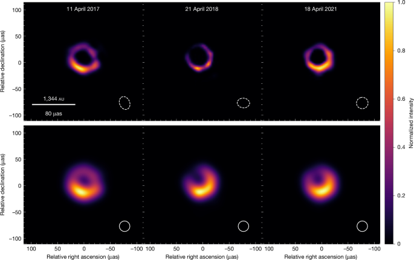
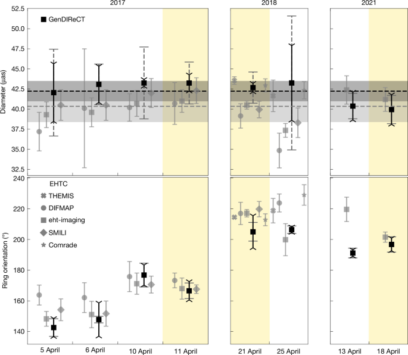

本期为期刊选文：未确认当日HE公告，仅使用具有真实发表日期的近期未读期刊论文，不将旧HE文章标为今日新文。
生成时间：2026-11-12T11:34:34+08:00
当日来源日期论文数：0
内容构成：今日新文 0 篇；补充推荐 1 篇；经典旧文精读 0 篇
阅读分层：重点精读 0 篇；相关简报 1 篇。精读依据科学贡献筛选，简报保留方法、结论及局限。
补充推荐论文数：1
数据源警告
- 本次有 2 个数据源访问异常；完整错误已保留在运行日志中，日报只显示摘要。
- 其他来源：2 个异常。
- 主要错误类型：其他 2 次。
今日结论
本期未确认当日HE新投稿或交叉投稿，独立筛选近期未读期刊研究，共 1 篇通过既定科学门槛与全文核验。各篇保留实际来源日期。
近期未读期刊研究（保留实际发表日期）
1. Independent interferometric observable confirms black hole shadow in M87*
- 来源：Nature astronomy and astrophysics
- 链接：https://www.nature.com/articles/s41586-026-11241-9
- 作者：未知
- 类型：近期未读期刊研究
- 公告 / 来源日期：2026-11-11
- 阅读层级：相关简报
- 评分：novelty 7/10，importance 8/10，relevance 9/10，final 9.05/10
- 推荐理由：GenDIReCT及闭合不变量已有算法和真实源验证，本篇将其用于2017/2018/2021 M87数据并进行视场、训练集和几何拟合交叉检验，是有用的新约束，非全新算法或独立观测；环径稳定、质量仍依赖未独立标定alpha且自旋未约束。按贡献分列相关简报。
中文题目：用闭合不变量复核 M87* 黑洞阴影：环径稳定，质量与自旋仍有边界
问题、方法与结论：M87* 的环状图像是否由定标或成像选择造成？作者将已有 GenDIReCT 方法用于 2017、2018、2021 年八个历元的 EHT 公开数据，以抵消台站增益的闭合不变量驱动生成式重建，比较三种视场及不同训练集。高质量历元稳定恢复约 40 微角秒的环；图像特征提取给出平均直径 42.2±1.5 微角秒，几何前向拟合得到 42.3±1.1 微角秒。两者使用同一批观测，属于方法交叉验证，不能累计为独立发现显著性。
意义与贡献：研究强化了环状结构对成像选择的稳健性，尤其回应扩大视场可能消除环的争议。低质量历元仍存在较模糊的解；环宽、中心亮度和方位不对称更依赖分辨率与算法。已有算法在 M87* 上提供了有用的新约束，科学贡献主要在复核，而非新观测或全新成像原理。
可借鉴之处：可借鉴的是把定标不变量、视场变化、训练集中去除几何图形及解析几何模型放在同一证据链中。作者合并两个频段，检验十秒尺度先算闭合量再平均的影响，并用两种高灵敏度参考台站减少选择偏差。生成图像群的分散不是贝叶斯后验误差，接近一的残差指标也只证明与数据相容，不能证明图像唯一或真实。
局限与关注点：闭合量丢失绝对位置及通量，训练数据仍提供隐含先验。约65亿太阳质量依赖距离及暂借的环径标定系数，方法自身尚未独立标定；约20度倾角来自限定磁阻塞盘模拟的图像相似度，未约束自旋大小，也不是置信区间。下一步应扩大孔径覆盖、独立标定质量换算并检验模拟依赖，不能据此宣称高能辐射区位置或喷流供能机制已确定。
Fig1

图注：图1：使用2017年4月11日、2018年4月21日和2021年4月18日数据得到的合成重建图像。虚线椭圆表示合成点扩散函数的半高全宽。下排为与20微角秒圆形波束卷积后的合成图像，可与EHT合作组的M87基准重建比较；上排未卷积。强度采用归一化线性标度；其他方法将M87紧致成分流量密度约束在0.4至1.0 Jy（原文参考文献3、33、34）。
怎么看这张图：先逐列比较同一年上下两排：卷积抹平细结构但保留环。再跨年比较，稳定的是总体环径；亮斑变化不能直接解释成物质轨道，也不能从归一化色标比较绝对流量。 直接检验核心环状结构与误差口径。
来源与置信度：Nature original HTML；source verified；https://media.springernature.com/lw685/springer-static/image/art%3A10.1038%2Fs41586-026-11241-9/MediaObjects/41586_2026_11241_Fig1_HTML.png
Fig2

图注：图2：测得的环直径和取向。按观测历元比较本研究图像域特征提取结果与EHT合作组数值；各历元的EHT结果从左至右对应THEMIS、DIFMAP、eht-imaging、SMILI和Comrade。本文测量给出两种不确定度：虚线表示图像域提取中的离散度（直径沿方位角、取向沿径向计算）；带三叉端帽的实线表示不同视场之间的标准差，是本文方法特有的估计。直径面板用虚线和带状区域表示EHT方法及本文方法的均值与1σ标准差。各年质量最高的数据集以黄色突出。
怎么看这张图：上图比较环径的稳定程度，下图看取向及其历元差异。务必区分两种误差棒：方向离散与视场敏感性不等价于同一个参数后验；也不应把同数据不同算法当独立观测平均以提高显著性。 直接检验核心环状结构与误差口径。
来源与置信度：Nature original HTML；source verified；https://media.springernature.com/lw685/springer-static/image/art%3A10.1038%2Fs41586-026-11241-9/MediaObjects/41586_2026_11241_Fig2_HTML.png